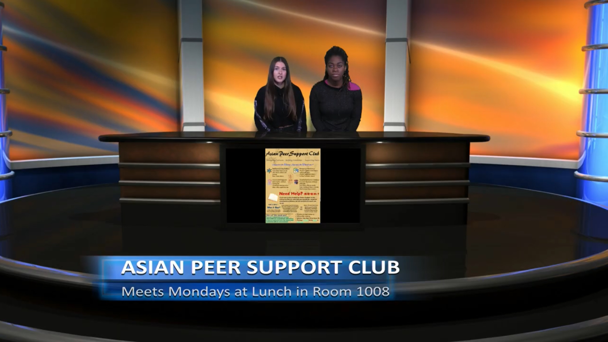
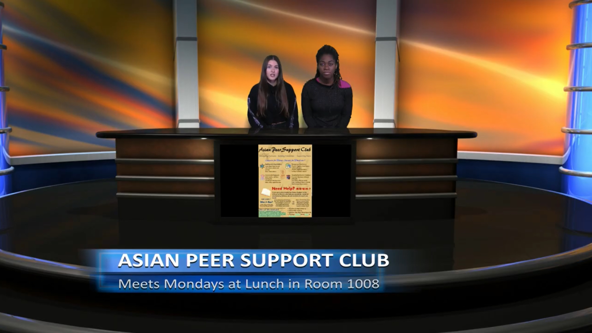

Welcome
Our club is dedicated to building bridges between cultures and helping students from all backgrounds feel at home in our school community. We focus on cultural adjustment and adaptation, language exchange, and academic and life support for international students. Through activities like cross-cultural social events, holiday celebrations, and team-building workshops, we aim to create a welcoming space where everyone can share, learn, and grow together.
Whether you want to improve your English or Chinese, learn about different cultures, or simply make new friends, our club is the perfect place to connect and belong.
本俱乐部致力于搭建文化交流的桥梁，帮助来自不同背景的学生更好地适应校园生活，融入集体。我们主要关注文化适应与交流、语言互助以及学业和生活支持。通过举办跨文化活动、节日庆祝和团队建设工作坊等活动，我们希望为每一位成员提供一个温暖、开放、包容的交流平台，让大家在学习与分享中共同成长。
无论你想提高英语或中文水平、了解不同文化，还是想结识更多朋友，这里都是你的理想之地。
 


Email: apscchs.1@gmail.com
Instagram: @apscchs